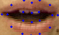

|
← Back to Home
WhisperNet: Lip-Based Authentication
2021

Developing a deep Siamese network for lip-based person re-identification to enhance biometric security. The architecture is designed to be robust to emotion and speech tempo variations in unconstrained settings.
Related publication: WhisperNet (2021); preprint follow-up: WhisperNetV2 (2024).
|